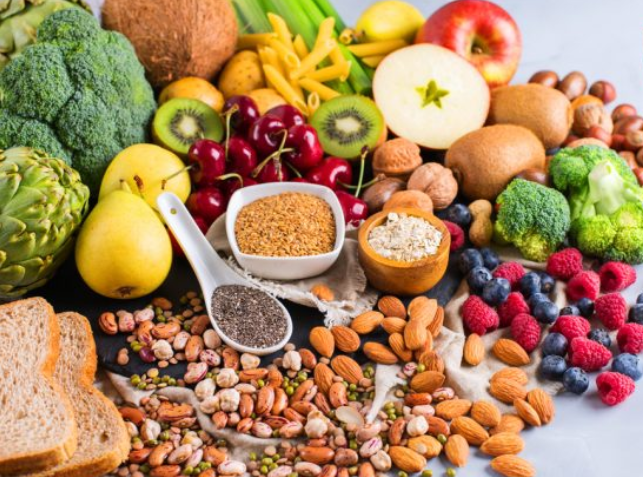

Los alimentos y su origen.
Etapa 1
El profesor y los alumnos acuden al aula de medios para observar en YOUTUBE.COM un video de su elección sobre el origen de los alimentos:
Origen de los alimentos
¿De dónde provienen los alimentos?
Los alimentos según su origen
¿Por qué las golosinas son comida chatarra?
Actividad 1. Adivina qué soy
- • El profesor organiza a los alumnos en 5 equipos de trabajo.
- • Les pregunta si les gusta jugar a las adivinanzas y reparte una hoja de AdivinanzasVidaSana.pdf a cada equipo para que las resuelvan.
- • Enseguida les ofrece unas tarjetas (A1-0FichasQuiensoy.pdf) a los equipos con el nombre e imagen de un alimento vegetal o animal pidiéndoles que piensen en todas las características del alimento que les tocó y las describan en la tarjeta por ejemplo: color, forma, manera de prepararlo o consumirlo, otros
- o Manzana, naranja, plátano, uvas, sandía
- o Brócoli, tomate, pepino, cebolla, zanahoria
- o Filete de res, piernas de pollo, jamón/tocino, filete de pescado, queso/leche.
- • Los alumnos eligen un representante de cada equipo para que describa su alimento y pregunten a otro equipo ¿Adivina qué soy?
- • El docente aprovechará el intercambio para generar una discusión ordenada y argumentada.
- • El maestro dará una introducción al tema, cuestionando a los alumnos acerca de su alimentación y el tipo de alimentos que consumen diariamente y si dentro de ella consumen los alimentos básicos: carnes, cereales, leche, frutas y verduras y qué hacen para que su alimentación sea sana.
Actividad 2. Origen de los alimentos.
- • El docente asigna a cada equipo un tema (cada equipo realiza en Canva, un cartel infográfico, considerando la información siguiente: Nombre del alimento, características físicas, tipo de preparación para consumirlo, dónde se compra, dónde se produce, otros)
- Tema 1. Alimentos de origen vegetal
- Tema 2. Alimentos de origen animal
- Tema 3. Alimentos chatarra y golosinas
- Tema 4. Alimentos de origen mineral
- • Por turnos, cada equipo exhibe o expone los resultados de sus creaciones en Canva.
Actividad 3. Las calorías:
• El docente podrá utilizar alguno de los videos siguientes para dar a conocer la información referente a las calorías.
¿Qué son las calorías?
¿Qué son las calorías?
¿Qué son las calorías y para qué sirven?
¿Qué son las calorías?
¿Qué son las calorías en los alimentos?
Resaltando la importancia de la combinación de alimentos en cada comida y productos de consumo que son de escaso valor alimenticio, el maestro les presentará la siguiente información:
• Aportación calórica de algunos alimentos: (A1-3AportacionCaloricaAlimentos.pdf).
• El maestro organiza a los alumnos en equipos y pide que formulen algunas situaciones con la información, por ejemplo:
* Si me tomo un vaso de leche, me como un pan y un plátano, ¿cuántas calorías consumo?.
Al terminar comparten los resultados.
Después de realizar los comentarios necesarios el profesor hará hincapié en la necesidad que tienen los niños/jóvenes de consumir una alimentación balanceada e ingerir de 1400 a 2400 calorías diarias
